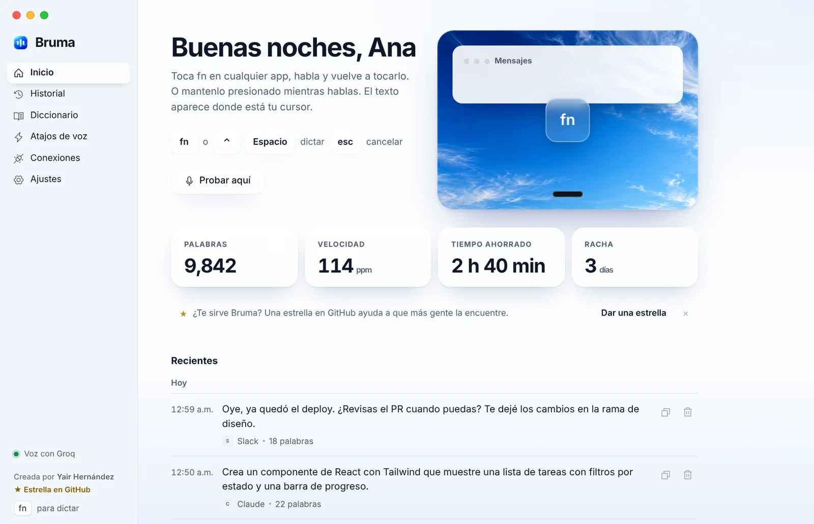
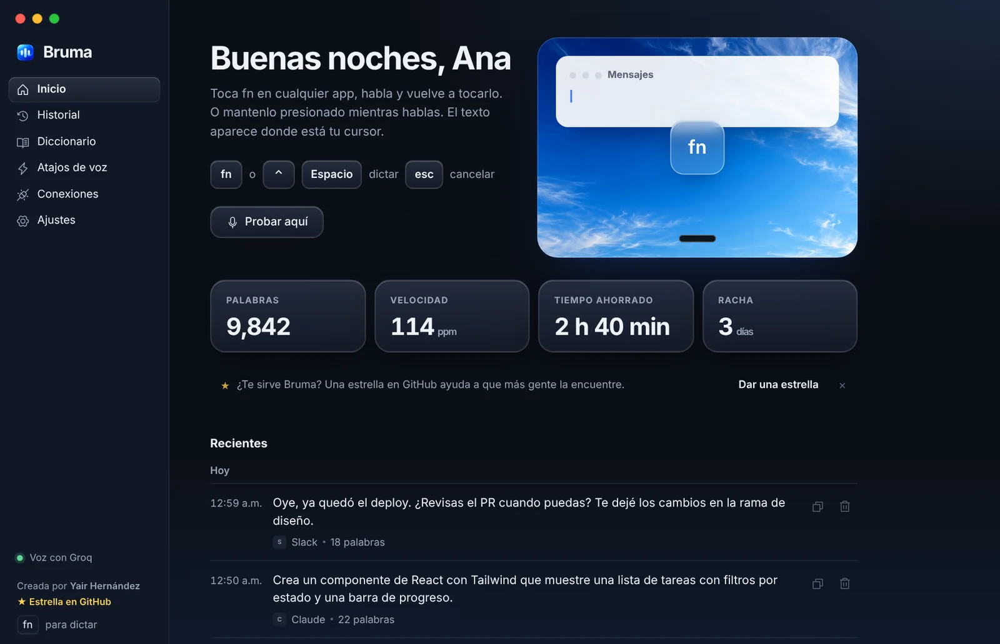
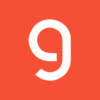
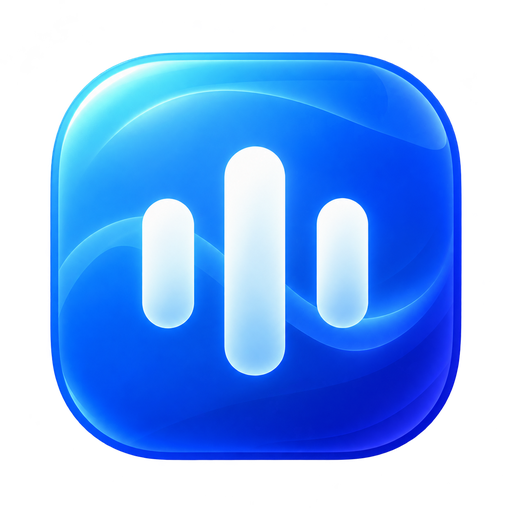

Habla. Bruma escribe.
Teclado por voz gratis y de código abierto para tu Mac. Toca fn, habla, y el texto aparece limpio y bien puntuado donde está tu cursor, en cualquier app.
Esta prueba usa el reconocimiento de voz de tu navegador. En tu Mac, Bruma usa Groq o el motor que elijas, y además pule el texto.
Hablas como hablas.
Se escribe como debe.
Bruma escucha, transcribe y pule en el tiempo que tardas en soltar la tecla. Quita las muletillas, aplica tus correcciones y pone los signos que el español sí usa.
- 1Escucha mientras hablas, solo en memoria
- 2Transcribe con Groq, OpenAI, Deepgram o tu servidor
- 3Pule: quita muletillas, aplica correcciones y puntúa
- 4Pega donde está tu cursor y devuelve tu portapapeles
Se pone del color de tu app.
Y escribe en su tono.
La píldora toma el color de la app donde vas a escribir, sin tapar nada. Y el texto se adapta: breve en WhatsApp, en párrafos en el correo, exacto en tu editor.
Una app que se siente de la Mac.
Vidrio líquido, San Francisco y los botones de siempre. Tu historial, tus palabras por minuto y el tiempo que te ahorras, todo guardado solo en tu computadora.


Tu clave. Tu motor.
Bruma no tiene servidor: conectas tu propia clave y el audio va directo de tu Mac al servicio que elijas. Con la de Groq, que es gratis, ya puedes dictar.
Crear una clave gratis en console.groq.com-

GroqWhisper Large v3 Turbo. Plan gratis, unas 8 h de audio al día. También pule el texto gratis.Recomendado -
 ClaudeLa mejor redacción y puntuación. Fracciones de centavo por dictado.
ClaudeLa mejor redacción y puntuación. Fracciones de centavo por dictado. -
 DeepgramNova-3 en streaming: ves las palabras mientras hablas.
DeepgramNova-3 en streaming: ves las palabras mientras hablas. -

OpenAIModelos GPT-4o Transcribe, pago por uso. -
Tu propio servidorCualquier Whisper compatible con OpenAI. 100% tuyo.
Lo que dices no pasa por nosotros.
No hay un “nosotros” en medio. Este es todo el camino que recorre tu voz:
- Tus claves nunca salen de tu computadora. En macOS van en un archivo privado que solo tu usuario puede leer; en Windows, en el Administrador de credenciales.
- El audio nunca se guarda. Vive en memoria y solo viaja al motor que tú elegiste.
- Nunca envía por ti. Bruma pega el texto, jamás presiona Enter.
- No lee campos de contraseña. El contexto del cursor se ignora donde escribes secretos.
- Sin telemetría y sin cuenta. El historial es local y lo puedes apagar o borrar.
- Código abierto, licencia MIT. Todo lo de arriba lo puedes verificar línea por línea.

Toca fn. Empieza a hablar.
Gratis para siempre en uso personal. Solo necesitas una clave de Groq, que también es gratis.
¿Prefieres Terminal? Instala y conserva tus permisos en cada actualización:
curl -fsSL https://raw.githubusercontent.com/yairhdz24/bruma/main/scripts/install-mac.sh | zsh
- Abre el .dmg y arrastra Bruma a Aplicaciones. La primera vez, clic derecho en Bruma y luego Abrir.
- Da permiso de Micrófono y Accesibilidad cuando la bienvenida te lo pida.
- Pega tu clave de Groq en Conexiones. Listo: toca fn y habla.